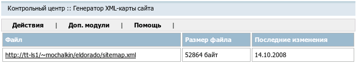

Название
Генератор XML-карты сайта — Создает карту сайта в формате Sitemap
О модуле
|
| Тип | Административный |
| Можно создать копий | Только одну |
| Присутствует по умолчанию | Нет |
| Можно удалять | Да |

Создает карту сайта в формате Sitemap.
Доступные действия
- →
Файл sitemap.xml будет обновлен в соответствии с текущей структурой сайта.